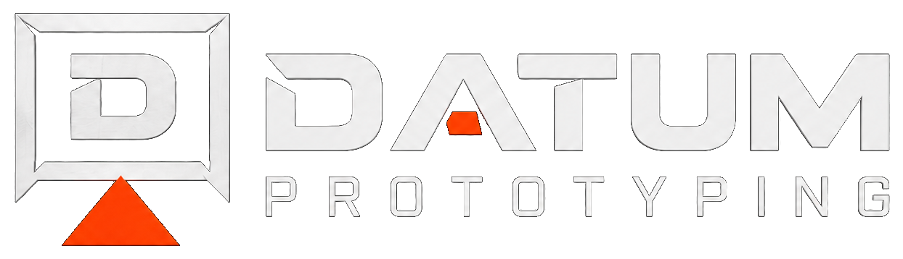
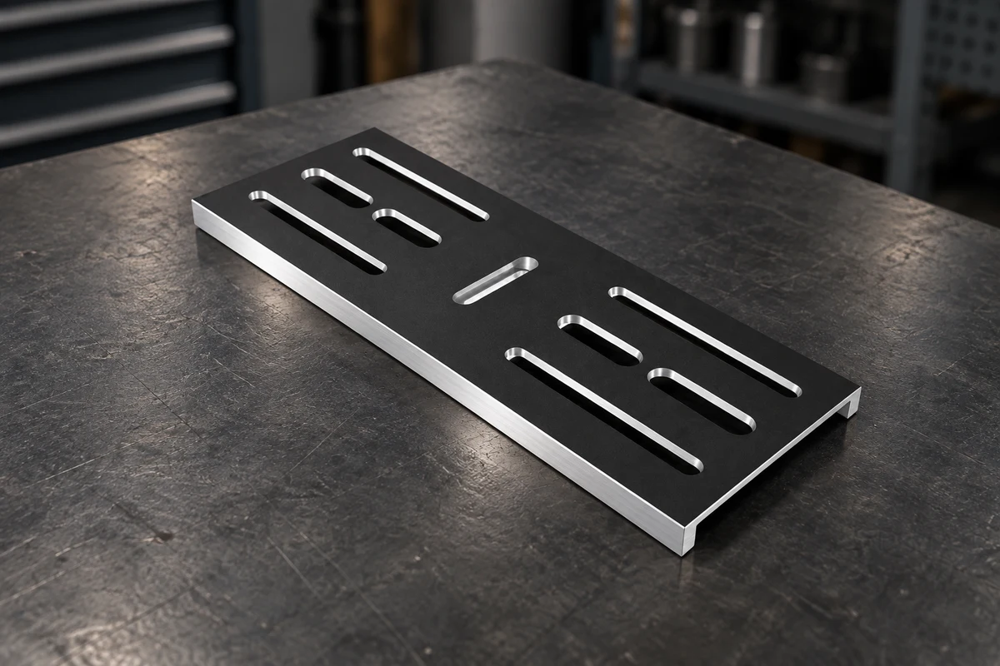

Design og ansvar
Konstruktionen i Autodesk Inventor blev leveret af min ven. Mit ansvar var fremstillingen, efter at mulighederne var afklaret med underviseren.

← Alle projekterDP / 003 / CNC-BEARBEJDNING
En CNC-opgave med fokus på stabil opspænding, kontrolleret materialefjernelse og bevaret planhed. Emnet blev fremstillet efter en ekstern konstruktion og efterfølgende afprøvet af brugeren.

PROJEKT PROCES
Projektet er dokumenteret ud fra ansvar, udfordring, fremgangsmåde og resultat.
Konstruktionen i Autodesk Inventor blev leveret af min ven. Mit ansvar var fremstillingen, efter at mulighederne var afklaret med underviseren.
Den største udfordring var at bevare pladens planhed under fræsningen, så den ikke bukkede under bearbejdningen.
Jeg undersøgte først mulighederne sammen med vores underviser, og vi vurderede, at delen kunne fremstilles. Under fræsningen arbejdede jeg med mange lette gennemløb og understøttede emnet med en Machinist Jack for at holde det stabilt.
Efter levering afprøvede han delen i brug. Få dage senere modtog jeg et billede og en positiv tilbagemelding om funktionen.
Projektet gav mig erfaring med at fremstille en del ud fra en andens konstruktion og med betydningen af understøtning og bearbejdningsforløb for pladens planhed.
DOKUMENTATION
Dokumentationen er en del af projektet — ikke et bilag, der kommer bagefter.
NÆSTE OPGAVE